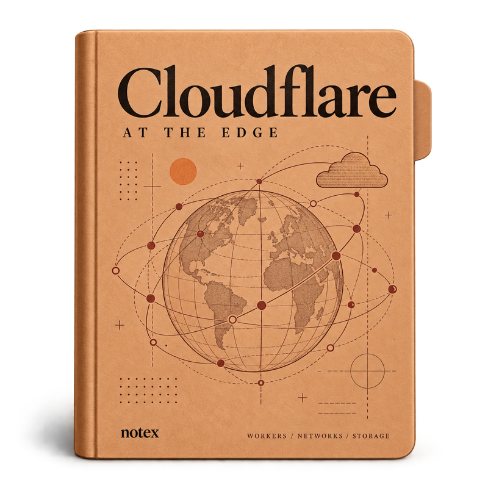
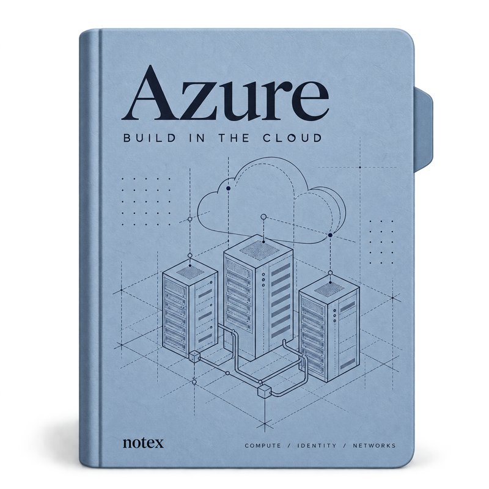
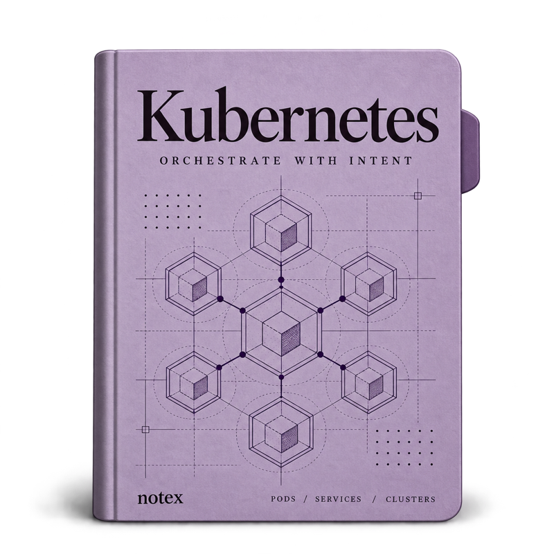

Cloudflare at the edge
- Workers and serverless foundations
- DNS, caching and the global network
- R2, D1 and stateful applications
Availability, latency, scalability. Start with the constraints that shape the system.
Revisit: what changes when the first bottleneck moves?
Study checkpoint 18 / 25 minNotesRead. Build. Connect.
SCALE REVIEW · DECISION 08Start with the query, understand the tradeoff, then build the simplest useful thing.
Build your technical range — notes in programming, system design,
and AI, for developers who want to understand how things work.
PICK YOUR PATH
CLOUD & INFRASTRUCTURE
Build at the edge. Understand the cloud. Run your own cluster.



Work through composite types, control flow, functions, pointers, and testing. Short lessons, code examples, exercises, and practical reviews.
One place to collect what you learn, connect the ideas, and keep going.
Architecture, replication, transactions, consensus, and streaming. Follow a structured path through storage, distributed systems, and data processing.
One place to collect what you learn, connect the ideas, and keep going.
Features, APIs, availability, latency, scalability, durability. A practical guide to thinking through the system before you start building.
One place to collect what you learn, connect the ideas, and keep going.
From operators and strings to classes, generators, and the Python data model. Keep the examples close and work through them one at a time.
One place to collect what you learn, connect the ideas, and keep going.
A compact reference for version control. Revisit the commands, try a workflow, and get back to what you were building.
One place to collect what you learn, connect the ideas, and keep going.
SQL examples, relational concepts, joins, and database operations. A reference to return to when the next data question comes up.
One place to collect what you learn, connect the ideas, and keep going.
Notes and examples across modern JavaScript: arrays, functions, objects, promises, and asynchronous code.
One place to collect what you learn, connect the ideas, and keep going.
Walk through sorting and problem solving. Start with the steps, understand the tradeoff, and write your own implementation.
One place to collect what you learn, connect the ideas, and keep going.
Tools, references, and resources gathered along the way. Follow an idea and see where it leads next.
One place to collect what you learn, connect the ideas, and keep going.
A starting point for AI and machine learning resources, research directions, practical references, and learning material.
One place to collect what you learn, connect the ideas, and keep going.
Notex brings your technical learning into one place.
It brings together the notes, examples, tools, and references collected along the way — so there's always a useful place to return when you're learning something new.
Explore programming, databases, algorithms, system design, and AI without losing the connections between them.
Enter from any level and move at your own pace. Read a note, try an example, and follow the next useful branch.
@ Notex NotesBEYOND THE NOTES
Run it. Understand it.
A concept at a time
Follow the next idea
Learn in the open
Learn in order
Start with the first
The technical shelf
Keep experimenting
OPEN ACCESS
View the complete library →Every programming note, system design reference, and practical guide.
Explore the notes →Handwritten pages, reference PDFs, and Python notebooks to explore.
Browse the resources →Explore the source, suggest a correction, or keep a local copy of the site.
Explore on GitHub →Work through composite types, control flow, functions, pointers, and testing. Short lessons, code examples, exercises, and practical reviews.
One place to collect what you learn, connect the ideas, and keep going.
Architecture, replication, transactions, consensus, and streaming. Follow a structured path through storage, distributed systems, and data processing.
One place to collect what you learn, connect the ideas, and keep going.
Features, APIs, availability, latency, scalability, durability. A practical guide to thinking through the system before you start building.
One place to collect what you learn, connect the ideas, and keep going.
From operators and strings to classes, generators, and the Python data model. Keep the examples close and work through them one at a time.
One place to collect what you learn, connect the ideas, and keep going.
A compact reference for version control. Revisit the commands, try a workflow, and get back to what you were building.
One place to collect what you learn, connect the ideas, and keep going.
Read the notes, rebuild the foundations, and share what you learn as you go. A little practice, one useful idea at a time.
FAQ
Start free. If you want programming fundamentals, open Python. For architecture and tradeoffs, open System Design. To find a particular topic, search the library.
Programming notes, system design, database references, developer tools, algorithms, handwritten PDFs, and Python notebooks. Everything comes from the existing Notex collection.
No. Use the notes as a practical reference, work through examples, or follow your own curiosity. The interview study plan is one part of the collection.
Yes. All notes, notebooks, and PDFs are free. No account or subscription is needed.
Yes. Use Edit on GitHub on a note, or open an issue in the repository. Notex is built in the open.
They stay in this browser on your device. Open a note and select Save note, then use the Saved filter in the library.
MANY TOPICS / ONE MAP
See what to learn, find the next useful branch, then start reading.